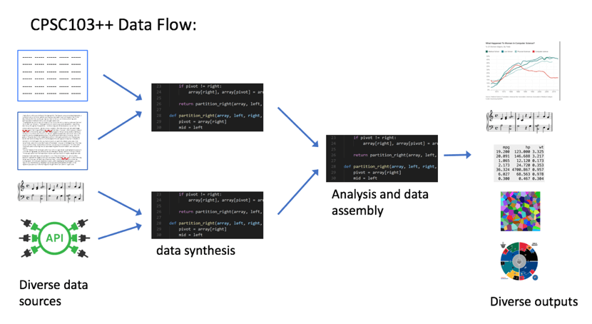

Week 4: From Objects to APIs
This week was a two-for-one special! We wrapped up our exploration of dataclasses with bracelets, then pivoted to something completely different: accessing data from the web. Let’s see how these pieces fit into your growing toolkit.
Your Growing Toolkit
Every problem we solve uses some combination of these tools:
- Representation — how we encode meaning (binary, types, RGB)
- Collections — how we group things (lists, tuples, dicts)
- Control flow — how we make decisions and repeat (if/else, loops)
- Functions — how we name and reuse logic
- Abstraction — how we hide complexity
- Efficiency — how we measure cost (summations, timing analysis)
This week: Dataclasses (finishing up) + APIs & Dictionaries (new tools!) → Real-world data
The Big Picture

We’re moving from self-contained programs to programs that interact with the outside world. Your code can now reach out and grab data from the internet!
Tuesday: Finishing Bracelets
We completed our Bracelet class by adding methods that make it actually useful.
The Slack Problem
How do you know if beads fit on a bracelet? You compare the circumference to the total diameter of all beads:

Slack = circumference − sum of all diameters
- If slack ≥ 0: the beads fit!
- If slack < 0: too many beads!
def slack(self) -> float:
"""Return the extra string after all beads are strung."""
total_diameter = sum(bead.diameter() for bead in self.beads)
return self.circumference() - total_diameterNotice that slack() uses a list comprehension inside sum() to calculate the total diameter. Objects collaborate!
Adding Beads Safely
We only want to add a bead if it fits:
def string_bead(self, bead: Bead) -> bool:
"""Add a bead only if it fits. Returns True if added."""
if self.slack() >= bead.diameter():
self.beads.append(bead)
return True
return FalseThis is a pattern you’ll see often: check first, then act.
enumerate(): Index + Value Together
When looping over a list, sometimes you need both the position and the value:
fruits = ["apple", "banana", "cherry"]
# The clunky way
i = 0
for fruit in fruits:
print(f"{i}: {fruit}")
i += 1
# The Pythonic way!
for i, fruit in enumerate(fruits):
print(f"{i}: {fruit}")enumerate() gives you (index, value) pairs. Much cleaner!
Name Bracelets

We extended beads to optionally hold letters:
@dataclass
class Bead:
radius: float
colour: tuple[int, int, int]
letter: str = "" # empty string means no letterThe = "" makes letter optional—if you don’t provide it, it defaults to an empty string.
Thursday: Web Data & APIs
Complete topic shift! We learned how to access data from the internet programmatically.
The Web as a Data Source
The internet isn’t just web pages—it’s a massive collection of structured data waiting to be accessed:
Every time you load a web page, your computer:
- Sends a request to a server
- Receives data back (usually HTML)
- Renders it visually
But here’s the key insight: your Python code can do the same thing!
From HTML to Data
Web pages are written in HTML—a markup language with nested tags:
<div class="song">
<span class="title">Lover</span>
<span class="artist">Taylor Swift</span>
<span class="rank">49</span>
</div>We could parse this ourselves… but it’s messy. That’s why we use APIs.
APIs: Application Programming Interfaces
An API is a clean interface for accessing data. Instead of scraping messy HTML, we call functions that give us Python objects:
import billboard
chart = billboard.ChartData('hot-100')
for song in chart:
print(f"{song.rank}. {song.title} by {song.artist}")The billboard.py library handles all the messy web stuff. We just get clean data!
Dictionaries: Keys to Your Data
APIs often return data as dictionaries—Python’s key-value data structure:
# Creating a dictionary
song = {
"title": "Lover",
"artist": "Taylor Swift",
"rank": 49,
"weeks": 4
}
# Accessing values by key
print(song["title"]) # "Lover"
print(song["rank"]) # 49
# Adding/updating values
song["peak"] = 10
song["rank"] = 42 # update existing valueDictionaries are like lists, but instead of integer indices (0, 1, 2…), you use meaningful keys (“title”, “artist”, “rank”…).
List of Dictionaries: Tabular Data
Real datasets often look like this:
songs = [
{"title": "Lover", "artist": "Taylor Swift", "rank": 1},
{"title": "Bad Guy", "artist": "Billie Eilish", "rank": 2},
{"title": "Truth Hurts", "artist": "Lizzo", "rank": 3},
]
# Find all songs by Taylor Swift
taylor_songs = [s for s in songs if s["artist"] == "Taylor Swift"]
# Find the #1 song
for s in songs:
if s["rank"] == 1:
print(f"#1 is {s['title']}")This is powerful! But notice we’re writing loops for everything…
The Challenge
Every question we asked required a loop:
- Find the #1 song → loop through list
- Count songs by artist → loop and count
- Find longest-running song → loop and track max
- Calculate average → loop and sum
What if there was a data structure designed for this kind of analysis?
Spoiler: There is! It’s called a DataFrame, and we’ll meet it next week.
Putting It All Together
This week connected two different worlds:
| Tuesday | Thursday |
|---|---|
| Custom types (dataclasses) | Data from the web |
| Composition (objects in objects) | Dictionaries (key-value pairs) |
| Methods that modify state | APIs that fetch data |
enumerate() for indexed loops |
List comprehensions for filtering |
The common thread? Abstraction. Whether it’s a Bracelet that hides the complexity of managing beads, or an API that hides the complexity of HTTP requests, good abstractions make hard problems tractable.
Quick Reference
Dataclass Methods
| Pattern | Example |
|---|---|
| Check then act | if self.slack() >= bead.diameter(): ... |
| Sum with comprehension | sum(b.diameter() for b in self.beads) |
| Optional attribute | letter: str = "" |
enumerate()
for index, value in enumerate(my_list):
print(f"{index}: {value}")Dictionaries
| Operation | Syntax |
|---|---|
| Create empty | d = {} |
| Create with values | d = {"key": value} |
| Access value | d["key"] |
| Add/update | d["key"] = new_value |
| Check if key exists | "key" in d |
| Get all keys | d.keys() |
| Get all values | d.values() |
| Get key-value pairs | d.items() |
Iterating Dictionaries
# Over keys (default)
for key in my_dict:
print(key, my_dict[key])
# Over key-value pairs
for key, value in my_dict.items():
print(key, value)What’s Next?
We’ve seen that looping through lists of dictionaries is powerful but verbose. Next week, we’ll discover pandas DataFrames—a data structure that makes tabular data analysis much more elegant.
Get ready to filter, aggregate, and visualize data with just a few lines of code!